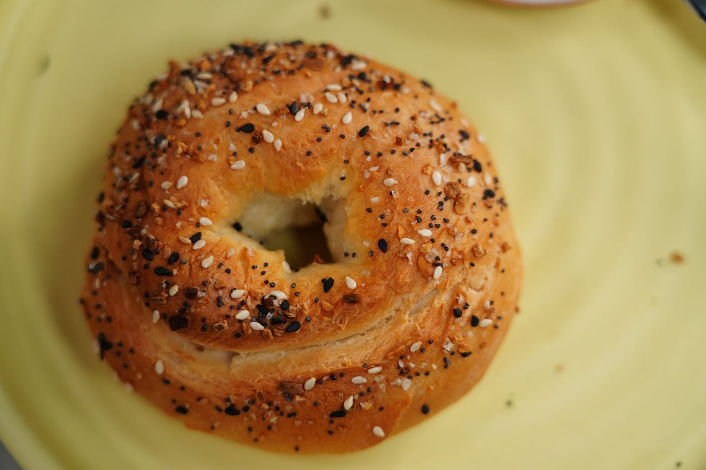

Bagels

Description
Homemade bagels have never been easier. With this "magic" two-ingredient dough, you can have fresh and fluffy bagels, hot out of the oven, in as much time as it takes to make a batch of pancakes. While not as dense as the traditional New York-style, these chewy, golden bagels, garnished with your favorite cream cheese and flavorful toppings, will satisfy any bagel craving.
Ingredients
- 1 ½ cups self-rising flour, plus more for kneading
- 1 cup plain Greek yogurt
- 1 large egg
- 2 teaspoons everything bagel seasoning, or to taste
- Mix flour and Greek yogurt together in a medium bowl until a shaggy dough forms. Transfer to a surface dusted with self-rising flour, and knead for 8 to 10 minutes. Continue adding flour as needed if the dough is too sticky.
- Preheat the oven to 375 degrees F (190 degrees C).
- Cut the dough into 4 pieces, roughly 4 ounces each. Roll each segment into a smooth ball. Use your thumbs to poke a hole in the center of each round, then gently stretch the dough until it becomes a uniform-sized ring.
- Transfer the dough to a parchment paper-lined baking sheet.
- Whisk the egg in a small bowl to create an egg wash, then brush a light coating on top of the dough. Sprinkle with bagel seasoning.
- Bake in the preheated oven for 20 to 22 minutes. Increase the oven's temperature to 450 degrees F (230 degrees C) and continue to bake until golden, 3 to 4 minutes more.